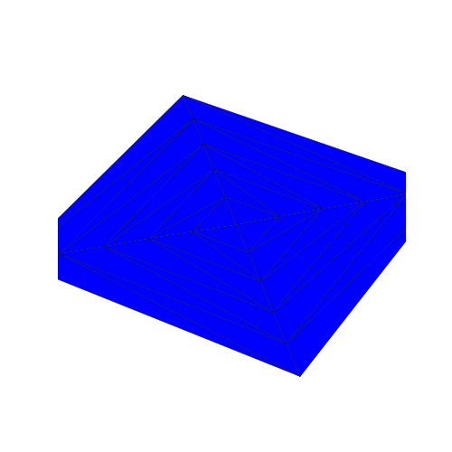
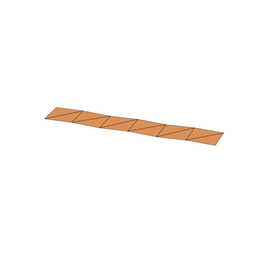

What it does
Turns a flat crease pattern into a triangulated mesh of point-masses joined by springs, then runs a fast, fully parallel explicit physics loop until it settles into its folded 3D shape — no global matrix solve, so the method maps cleanly onto a GPU. Built incrementally: a readable NumPy reference implementation first, then a Taichi GPU port matched to it to round-off, then an interactive viewer and real crease-pattern (SVG) import.


Under the hood
- Four force types from the source paper — axial (beam springs), crease (dihedral torsion springs), face (interior-angle shear), and viscous damping — every one finite-difference gradient validated.
- Four pluggable integrators — symplectic Euler, velocity Verlet (default), RK4, and a matrix-free implicit Euler solver via conjugate gradient with optional adaptive timestep. Verlet is stable at ~2× Euler's timestep; implicit at ~6×+.
- A GPU port in Taichi matching the NumPy reference to round-off, reproducing the source paper's Fig. 9 scaling result: ~78× faster at 33k nodes.
- An interactive viewer — fold by hand, tune stiffness/damping live, watch the strain heatmap update in real time.
- FOLD and SVG I/O, including color-coded crease-type import from SVG with planar face-finding to rebuild the mesh.

CPU (NumPy) is treated as the reference implementation; the GPU (Taichi)
path must match it to round-off on every change, enforced by a
cross-validation test suite (118 tests) alongside finite-difference checks
on every force gradient.